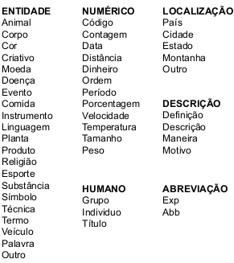
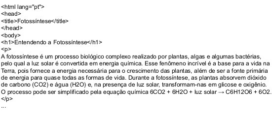
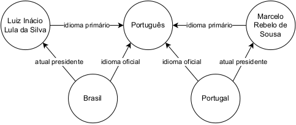
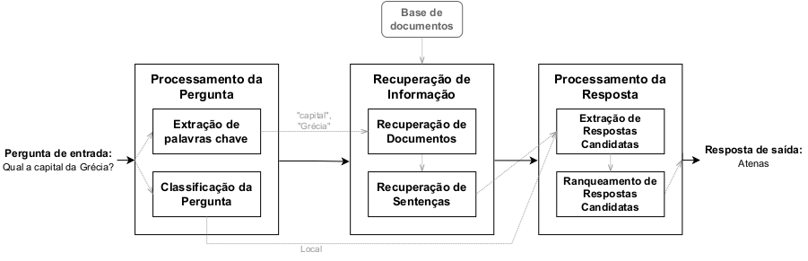
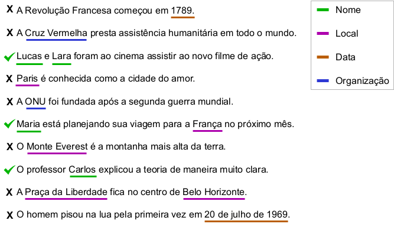
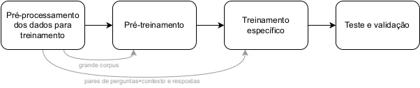

14 Perguntas e Respostas
14.1 Introdução
A área de Resposta Automática a Perguntas, em inglês Question Answering (QA), estuda como criar sistemas capazes de responder de forma automática a perguntas em linguagem natural. Esses sistemas buscam a capacidade de compreender a pergunta, recuperar informações relevantes e fornecer respostas precisas e úteis. Se compararmos com um sistema convencional de Recuperação de Informação (RI), que tem o objetivo de fornecer documentos relevantes a partir de uma consulta de entrada (Capítulo Recuperação de Informação), os sistemas de PR diferem-se principalmente pela sua precisão em fornecer apenas aquilo que lhe foi solicitado. Enquanto os sistemas de RI retornam listas ranqueadas de documentos, cabendo ao usuário/a explorar estes documentos em busca de informações mais específicas, os sistemas de PR irão fornecer apenas a resposta ao usuário/a, conforme o exemplo da Figura 14.1.
Neste capítulo, abordamos a área de PR no contexto de sistemas especialistas focados em entregar informações diretas sobre o que foi perguntado. Por outro lado, existem os sistemas chatbots, conhecidos também como agentes de conversação, que visam manter um diálogo contínuo e engajante com o usuário/a. A principal diferença desses sistemas é a sua capacidade de adaptar suas respostas considerando o contexto mais amplo da conversa. Estes sistemas de conversação não serão o foco deste capítulo (veja Capítulo ChatGPT, MariTalk e outros agentes de conversação); ao invés disso, abordaremos os sistemas de PR projetados para responder a perguntas de forma isolada, ignorando o contexto mais amplo da conversa, mas focados na eficiência e precisão em fornecer respostas informativas.
A área de PR se relaciona diretamente com duas grandes subáreas do Processamento de Linguagem Natural (PLN), que são a compreensão da linguagem natural e a geração de linguagem natural, uma vez que sistemas de PR são desenvolvidos para processar a pergunta de entrada e, muitas vezes, a geração de linguagem natural para a resposta de saída. Além disso, PR também se relaciona com a área de RI, uma vez que estes sistemas utilizam algum tipo de base de conhecimento; é necessário recuperar as informações relevantes para o desenvolvimento da resposta. A Figura 14.2 apresenta a arquitetura geral de um sistema de PR, contendo três passos convencionais, que consistem em: 1) processar a pergunta de entrada buscando sua compreensão, 2) buscar por informações relevantes em alguma base de conhecimento; e 3) definir a resposta de saída.
Os sistemas de PR utilizam diferentes etapas de processamento que envolvem diversas tarefas. Por exemplo, a compreensão da pergunta pode envolver diversas etapas, desde classificação de texto, extração de tópicos e Reconhecimento de Entidades Nomeadas (REN). Cada uma destas etapas podem ser aprofundadas e contém seus próprios desafios e problemas de pesquisa. Por outro lado, existem também soluções com menos etapas explícitas, como os modelos end-to-end, nos quais o modelo de PR pode ser entendido como uma caixa preta, onde a entrada é uma pergunta (podendo conter informações de contexto) e a saída é uma resposta. Estes modelos são redes neurais profundas, treinadas especificamente para a tarefa de PR. Assim, podemos considerar que estas etapas estariam de alguma forma implícita absorvida nas suas diversas camadas de neurônios artificias (apesar de não se poder assumir de fato uma hierarquia de representações desse tipo). Atualmente, estes modelos estão atingindo quantidades consideráveis de parâmetros neurais, que estão saindo de milhões para bilhões e até trilhões de parâmetros (o que pode exigir capacidades disponíveis para muitos poucos). O aumento na quantidade de parâmetros destes modelos está relacionado ao aumento da sua capacidade de entendimento da linguagem natural, armazenamento de informação e geração de linguagem natural.
Existem diversas maneiras de classificar um sistema de PR, com base em características que influenciam significativamente seu funcionamento e complexidade. Estas classificações incluem:
Tipo de pergunta: Os sistemas podem ser especializados em responder a perguntas factuais (ex.: “Quem escreveu Dom Casmurro?”) ou perguntas que requerem instruções detalhadas (ex.: “Como fazer um bolo de chocolate?”).
Fonte de conhecimento: Os sistemas podem utilizar documentos (com etapas de processamento de IR) ou dados estruturados (como grafos de conhecimento), onde as perguntas são transformadas em consultas (queries) que buscam informações relevantes.
Domínio de conhecimento: Existem sistemas de amplo domínio, que cobrem uma variedade de assuntos, e sistemas de domínio restrito, focados em áreas específicas como saúde (Oliveira et al., 2021), mudanças climáticas (Cação et al., 2021), ou direito (Quaresma; Rodrigues, 2005).
Cada um desses eixos representa uma dimensão independente, permitindo que os sistemas de PR sejam classificados e desenvolvidos combinando essas características de qualquer maneira, para atender a necessidades específicas de informação.
Além das tarefas convencionais de PR, existem diferentes tarefas com peculiaridades e desafios únicos, como ranquear uma lista de respostas fornecida para uma pergunta, correlacionar informações de múltiplas fontes de dados para fornecer uma resposta correta que requer múltiplos passos de raciocínio, e responder a perguntas com base em informações visuais (sistemas multi modais), o que requer que o sistema entenda a pergunta textual, correlacionando-a com a informação visual para gerar uma resposta apropriada.
Este capítulo explora os conceitos previamente introduzidos, categorizando os diferentes tipos de sistemas e apresentando as abordagens e técnicas comumente empregadas em cada um. São discutidos os diferentes tipos de tarefas de PR, destacando também os métodos de avaliação e outras categorias de tarefas relacionadas à PR. O capítulo é concluído com considerações finais que sintetizam as principais ideias e direcionamentos futuros.
14.2 Classificação de Sistemas de Perguntas e Respostas
Existem diferentes tipos de sistemas de PR que se diferenciam por diferentes critérios. Estas diferenças estão principalmente relacionadas à riqueza de possibilidades da linguagem natural, à grande amplitude de áreas de conhecimento e profundidade de detalhes que cada uma apresenta, como também às diferentes formas de recursos de informação. Portanto, o desenvolvimento de um sistema que domine toda a complexidade da linguagem natural, capaz de lidar com todos os tipos de estruturas de dados, e com conhecimento aprofundado em todas as áreas, é desafiador. Assim, é comum que existam diferentes tipos de sistemas de PR adequados para aspectos particulares. Esta seção busca organizar as diferentes categorias de sistemas de PR através de três formas de categorização baseadas no tipo da pergunta de entrada do sistema, no tipo de fonte de conhecimento e no domínio de conhecimento dos sistemas.
14.2.1 Tipo de pergunta
As perguntas em linguagem natural são uma forma de discurso que busca obter informações. Cada tipo de pergunta serve a um propósito específico e requer um tipo de resposta diferente. Existem diversos tipos de perguntas, cada uma servindo a um propósito diferente. Podem existir perguntas que requerem uma informação factual e curta, como por exemplo “Qual é a capital do Brasil?”, que requer apenas o nome de uma cidade como resposta. Outras perguntas podem requerer um texto mais longo, como por exemplo “Por que o céu é azul?”, que requer uma explicação. O tipo de pergunta pode variar não apenas no tamanho da resposta, mas também na necessidade de etapas de raciocínio para fornecer a resposta. Por exemplo, a pergunta “Quantos gols marcou o time campeão da Champions League de futebol de 2020?”, requer primeiro identificar o time campeão da Champions League de 2020 e depois contabilizar quantos gols este time fez durante o campeonato.
Dependendo do tipo de pergunta, a funcionalidade e complexidade do sistema de PR pode mudar consideravelmente. Por exemplo, perguntas que requerem informações factuais e curtas podem apenas extrair a informação solicitada de um documento de texto, enquanto uma pergunta que busca a comparação de duas obras literárias requer que o sistema analise dois livros diferentes para gerar uma resposta. Sendo assim, o tipo de pergunta que o sistema busca responder tem um papel significativo em seu desenvolvimento.
Diferentes estudos apresentam taxonomias que tentam organizar perguntas em diferentes categorias. Uma das principais é o trabalho de (Li; Roth, 2002) que apresenta uma taxonomia em dois níveis de granularidade com várias categorias em cada nível, conforme a Figura 14.3. O primeiro nível apresenta uma categorização mais abstrata, como “ENTIDADE”, enquanto o segundo nível apresenta suas subcategorias mais detalhadas, como “Animal”. Por exemplo, uma pergunta como “Quem é o atual presidente de Portugal?” pode ser classificada como “HUMANO” e “Indivíduo”, já que a resposta esperada é o nome de uma pessoa, enquanto que a pergunta “O que é um prisma?”, pode ser classificada como “DESCRIÇÃO” e “Definição”, já que a resposta esperada é um texto definindo o que é um prisma.

Uma maneira mais geral de dividir as perguntas é em dois grandes grupos: perguntas factuais e não factuais.
Factuais: São perguntas que exigem essencialmente que um único fato ou um pequeno trecho de texto seja retornado como resposta. Por exemplo, “Quando começou a Segunda Guerra Mundial?” ou “Qual é a capital da Espanha?”. A maioria das categorias da taxonomia de (Li; Roth, 2002) podem ser consideradas tipos de perguntas factuais, exceto a categoria “DESCRIÇÃO”;
Não factuais: São perguntas que normalmente requerem respostas longas, como uma descrição, opinião ou explicação. Por exemplo, “Por que o céu é azul?” ou “Quais os passos para obter um título de mestre?”.
O tipo de pergunta tem um papel significativo no funcionamento de um sistema de PR. Perguntas factuais normalmente são mais simples e requerem uma abordagem extrativa, onde a resposta final é diretamente extraída da base de conhecimento e retornada. Já o tipo não factual tipicamente contém perguntas mais complexas e desafiadoras para os sistemas, que podem requerer etapas de processamento especializadas em gerar linguagem natural, em caso de respostas longas. A Tabela 14.1 apresenta diferentes tipos de perguntas não factuais. Percebe-se que algumas dessas categorias têm desafios distintos para o sistema de PR, como por exemplo, perguntas de confirmação podem requerer etapas de checagem de fatos, enquanto que perguntas comparativas podem requerer a análise de múltiplas informações. Além destas categorias, podem existir diversos outros tipos de perguntas nos grupos de factuais e não factuais, como perguntas que requerem listas (“Quais são as maiores cidades do mundo?”), outras hipotéticas (“O que aconteceria se a lua desaparecesse?”), ou perguntas que precisam de exemplos como resposta (“De que maneira a arte influencia a sociedade?”).
A definição de categorias de perguntas pode ser ajustada e ampliada conforme as necessidades e capacidades evoluem nos sistemas de PR. É fundamental considerar a flexibilidade contextual das perguntas, onde até questões aparentemente diretas podem variar em sua classificação conforme o contexto. Por exemplo, a pergunta “Quem é o líder?” pode ser classificada de forma diferente dependendo do contexto em que é feita. Se estiver relacionada a uma discussão sobre uma empresa, pode referir-se a uma “Organização”; se o contexto for um evento esportivo individual, pode ser classificado como “Indivíduo”. À medida que os sistemas de PR se tornam mais sofisticados, eles também devem ser adaptáveis e flexíveis para acomodar novos tipos de perguntas e mudanças nas expectativas dos usuários, enfatizando a importância de interpretar corretamente o contexto para fornecer respostas precisas.
| Tipo | Descrição | Exemplo |
|---|---|---|
| Definição | Perguntas que requerem a definição de alguma coisa. Normalmente iniciam com “O que é ...” |
“O que é um prisma?” |
| Explicativas | Perguntas que requerem uma explicação ou contextualização. Normalmente iniciam com “Por que ...” |
“Por que o céu é azul?” |
| Procedimentais | Perguntas que requerem um conjunto de passos ou instruções para realizar alguma coisa. Normalmente iniciam com “Como ...” |
“Como fazer um bolo de chocolate?” |
| Comparativa | Perguntas que requerem uma comparação entre dois ou mais assuntos. |
“Quais são as diferenças entre SSD e HDD?” |
| Opinião | Perguntas que requerem uma perspectiva pessoal ou avaliação. |
“O que você acha de arte moderna?” |
| Confirmação | Perguntas que requerem “Sim” ou “Não” como resposta. | “Atenas é a capital da Grécia?” |
14.2.2 Tipo de Fonte de Conhecimento
Um dos principais componentes de um sistema de PR é a fonte de conhecimento, que é utilizada para extrair as informações necessárias para responder à pergunta de entrada. Existem diferentes tipos de componentes que representam a fonte de conhecimento, os quais se diferenciam na maneira como o conhecimento é criado, armazenado, modificado e consultado.
14.2.2.1 Dados Não Estruturados
Os dados não estruturados não seguem uma estrutura padrão e têm como vantagem a facilidade na criação do conjunto de dados que será a fonte de conhecimento do sistema. Deste modo, é possível utilizar qualquer conteúdo textual, sem a necessidade de estruturar o conteúdo em algum modelo pré-definido (Capítulo Conjunto de dados, dataset e corpus). Porém, a desvantagem desta abordagem é o maior desafio de processar e analisar estes dados pelos sistemas, que terão que extrair as informações relevantes da coleção que são necessárias para a resposta. Isto requerer uma capacidade maior de compreensão da linguagem natural. Nesta categoria se encaixam principalmente os documentos brutos de texto, que normalmente são uma coleção de documentos textuais sem uma estrutura que represente a informação em detalhes.
Para entendermos um sistema de PR com documentos textuais, podemos imaginar um sistema que utilize uma coleção de artigos jornalísticos como fonte de conhecimento e que responda perguntas sobre estes artigos. Este sistema pode ser classificado como um sistema de PR com dados não estruturados, uma vez que os dados estão em arquivos de texto sem nenhuma estrutura aprofundada para representar as informações. Além disso, o sistema utiliza alguma solução de RI para encontrar artigos relevantes em sua coleção para a pergunta de entrada. Depois de encontrar os documentos relevantes, é necessário extrair a informação específica solicitada destes documentos através de algum mecanismo que consiga associar a informação com a pergunta de entrada, como técnicas envolvendo REN ou modelos de compreensão de leitura.
Da mesma forma, um sistema de PR pode utilizar a web como fonte de informação, extraindo páginas HTML com algum mecanismo de busca, como o Google. Embora as páginas web contenham o seu conteúdo estruturado com tags HTML, estas tags não seguem um mesmo padrão entre páginas de diferentes sites. Além disso, a principal dificuldade é que a estruturação do texto com tags não é profunda o suficiente para representar cada informação da página de forma individual. Normalmente, o conteúdo textual é dividido em parágrafos com uma tag “<p>”, como é mostrado na Figura 14.4. Porém, outras tags não são utilizadas para informações mais detalhadas, como por exemplo, que os componentes absorvidos pelas plantas são o carbono e a água. Esta informação está entre outras diversas informações de um único parágrafo textual. Assim, podemos classificar o conteúdo de páginas web como dados não estruturados.

14.2.2.2 Dados estruturados
Diferentemente dos dados não estruturados, fontes de informações com dados estruturados apresentam uma estrutura padrão que representa e organiza a informação, facilitando o acesso e a interpretação dos dados pelo sistema. A informação estruturada segue um esquema rígido, como tabelas em um banco de dados relacional, onde cada tipo de dado é armazenado em uma coluna específica e cada registro ou linha representa uma entidade completa. Assim, todos os dados seguem um mesmo formato, reduzindo a necessidade do sistema em interpretar textos brutos para extrair as informações.
Como exemplo, podemos imaginar um sistema de PR que fornece informações sobre médicos de um hospital. As informações destes profissionais estão armazenadas em tabelas de um banco de dados relacional, onde cada uma contém colunas para detalhes específicos como nome, área de especialização e horário de trabalho. Assim, para a pergunta “Qual a área de especialização da Dra. Maria da Silva?”, o sistema poderia simplesmente retornar o valor da coluna “especialização” da linha do registro de Dra. Maria da Silva. Para encontrar este valor, o sistema precisaria transformar a pergunta de entrada em uma consulta SQL. SQL, que significa Linguagem de Consulta Estruturada (do inglês, “Structured Query Language”), é uma linguagem de programação usada para gerenciar e manipular bancos de dados relacionais. A consulta SQL equivalente à pergunta poderia ser algo como:
SELECT especializacao FROM medicos WHERE nome = 'Maria da Silva';Esta consulta instrui o banco de dados a selecionar o valor da coluna “especialização” na tabela “medicos” onde a coluna “nome” é igual a “Maria da Silva”. A execução dessa consulta resultaria na resposta desejada pelo sistema.
No grupo de dados estruturados, além de tabelas e bancos de dados relacionais, se encaixam principalmente os dados linkados, como ontologias e grafos de conhecimento, que são comuns de serem utilizados como fonte de conhecimento de sistemas de PR. Estas estruturas oferecem uma maneira rica e flexível de representar e organizar informações através de entidades e relacioná-las. Elas ajudam na compreensão semântica, que é crucial para responder perguntas de maneira eficaz e natural. Como mostrado na Figura 14.5, a entidade “Marcelo Rebelo de Sousa” contém diferentes relações, e entre estas entidades existe a relação de “atual presidente” com “Portugal”. Este tipo de estrutura facilita a busca por informações relevantes. Por exemplo, dada a pergunta “Quem é o presidente de Portugal?”, com o grafo de conhecimento é possível verificar todas as relações da entidade “Portugal” e verificar qual está mais próxima, que neste caso é “atual presidente”, e retornar a entidade relacionada.

Podem existir sistemas que utilizem ambas as formas de fonte de conhecimento. Por exemplo, dada a pergunta “Como o atual presidente de Portugal entrou na política?”, o sistema de PR pode utilizar o grafo de conhecimento para extrair a entidade “Marcelo Rebelo de Sousa” como atual presidente de “Portugal” e depois extrair as informações de como ele entrou na política, consultando documentos não estruturados que ajudarão a formular a resposta de saída.
14.2.2.3 Memória paramétrica
A transição dos sistemas de PR baseados em dados estruturados e não estruturados para os que utilizam memória paramétrica marca uma evolução significativa. Enquanto as abordagens tradicionais dependem de fontes de conhecimento externas, claramente definidas e acessíveis, a memória paramétrica introduz um paradigma onde o conhecimento é embutido diretamente na arquitetura e nos parâmetros de modelos de aprendizado profundo.
Com o advento das redes neurais profundas, os modelos de linguagem foram equipados com a capacidade de armazenar informações em seu elevado número de parâmetros ajustáveis (Capítulo Modelos de linguagem). Estes parâmetros podem ser entendidos como pesos de conexões entre neurônios artificiais que são ajustados durante a fase de treinamento. Esses modelos são treinados em grandes conjuntos de dados para aprender uma variedade de padrões e fatos, e são capazes de aplicar esse aprendizado para responder perguntas e realizar outras tarefas de PLN.
No entanto, com redes neurais, ainda não temos garantias de um processo perfeito de armazenamento, e não sabemos se as informações estão realmente sendo representadas de forma fiel aos dados originais. Além disso, apesar de serem capazes de aplicar esse aprendizado para responder perguntas e realizar outras tarefas de PLN, as informações contidas nesses modelos não são facilmente acessadas da mesma forma que um grafo de conhecimento ou documentos textuais, e também não são interpretáveis para os humanos até o momento. A informação está contida em diversos valores numéricos e que são utilizados exclusivamente pelos modelos de redes neurais profundas quando uma determinada entrada de dados é passada ao modelo.
Os modelos de aprendizado profundo, particularmente aqueles baseados em transformers (Vaswani et al., 2017), como o BERT (Devlin et al., 2019) e GPT (Achiam et al., 2023; Brown et al., 2020), contêm um mecanismo chamado de atenção, que permite ao modelo dar pesos diferentes para partes de uma entrada de texto de maneira mais dinâmica e contextual. A memória paramétrica é profundamente influenciada pelo processo de treinamento. O pré-treinamento em grandes corpora de texto é uma técnica comum para estabelecer uma base sólida de conhecimento geral, além de aprender a linguagem, estrutura, e relações contextuais. O fine-tuning é o próximo passo, onde o modelo pré-treinado é ajustado para tarefas específicas de PR. Nesta etapa, o modelo aprende especificidades do domínio em questão, adaptando sua memória paramétrica para ser mais eficaz na resposta a perguntas relevantes.
Um sistema de PR que utiliza um grande modelo de transformers como memória paramétrica é um exemplo clássico de uma abordagem end-to-end. Nesse sistema, um único modelo normalmente executa todas as etapas desde o processamento da pergunta textual até a resposta de saída. As etapas de processamento são realizadas de forma implícita nas inúmeras camadas do modelo. Durante a fase de treinamento, os parâmetros neurais do modelo são ajustados para mapear perguntas a respostas corretas, com base em um grande volume de pares de pergunta-resposta. Este processo, após extensivo desenvolvimento, ajustes e comparações entre diversas versões, possibilita que o modelo não apenas memorize respostas específicas, mas também aprenda padrões e relações que o capacitam a generalizar e responder a perguntas novas e não vistas durante o treinamento, embora esse resultado seja o fruto de um esforço significativo de otimização e refinamento.
É importante notar que a geração de respostas por modelos transformers end-to-end é resultado do entendimento contextual e da aplicação de padrões aprendidos, e não do acesso direto a respostas predefinidas. Além disso, a natureza “caixa-preta” desses modelos pode tornar desafiador entender exatamente como uma resposta é formada, levantando questões de interpretabilidade e confiabilidade. Portanto, enquanto sistemas de PR baseados em transformers end-to-end oferecem eficiência para processar e responder perguntas, eles também vêm com desafios importantes que precisam ser considerados.
Modelos end-to-end podem ser efetivamente combinados com outras abordagens para enriquecer suas capacidades. Especificamente, é possível fornecer não apenas a pergunta, mas também um contexto relevante como entrada para esses modelos. Para isso, o modelo precisa ser treinado com pares de pergunta+contexto e resposta, permitindo que ele aprenda a extrair e utilizar informações pertinentes do texto fornecido. Essa abordagem pode ser complementada com etapas de RI para identificar e fornecer o contexto mais relevante para cada pergunta. Ao integrar fontes de informação confiáveis e específicas, essa estratégia aumenta a confiabilidade e precisão do modelo, ajudando a reduzir o problema de delírio ou alucinação comum em modelos de linguagem gerativos, onde podem gerar respostas plausíveis, porém incorretas ou sem fundamento.
14.2.3 Domínio de conhecimento
Sistemas de PR podem ser categorizados com base no domínio de conhecimento ao qual se dedicam. Alguns são desenvolvidos para responder perguntas específicas de campos como biomedicina ou mercado financeiro, enquanto outros são projetados para abranger uma gama mais ampla de assuntos. Essencialmente, podemos dividir os sistemas em dois grupos principais: de amplo domínio e de domínio restrito.
14.2.3.1 Domínio Amplo
Os sistemas de amplo domínio visam responder perguntas sobre uma vasta gama de tópicos. Dado que o escopo do conhecimento é mais amplo, as fontes de informação utilizadas precisam ser extensivas e diversificadas para cobrir o máximo possível de áreas. Comumente, esses sistemas optam por fontes de conhecimento não estruturadas devido à sua ampla disponibilidade e variedade. Documentos de texto brutos e mecanismos de busca de páginas web são frequentemente empregados como fontes de informação, pois oferecem uma quantidade massiva de dados. No entanto, a vastidão de informações em domínios amplos implica em desafios relacionados à precisão e relevância das respostas geradas, demandando etapas de processamento específicas para recuperação e interpretação de dados.
14.2.3.2 Domínio Restrito
Os sistemas de domínio restrito concentram-se em responder perguntas dentro de um tópico específico ou conjunto limitado de tópicos. Devido à característica focada desses sistemas, a amplitude de informações necessárias é relativamente menor, permitindo uma exploração mais profunda e detalhada do assunto em questão. É comum a utilização de fontes de dados estruturados, pois estes podem oferecer informações específicas e detalhadas, essenciais para fornecer respostas precisas. Os sistemas de domínio restrito geralmente se beneficiam de um entendimento mais profundo e especializado do tópico, resultando em respostas mais confiáveis e acuradas. No entanto, eles enfrentam o desafio de manter-se atualizados e abrangentes dentro do seu campo específico, o que pode exigir atualizações regulares e monitoramento contínuo. Tornar-se assim uma tarefa custosa, já que os dados precisam ser constantemente estruturados e atualizados na fonte de informação, o que demanda esforços consideráveis em termos de tempo e recursos, tanto para a coleta quanto para a manutenção desses dados, garantindo que o sistema permaneça relevante e preciso ao longo do tempo.
14.3 Abordagens
Uma vez que a tarefa de PR busca compreender a pergunta de entrada, recuperar informações relevantes em sua base de conhecimento, e muitas vezes, gerar linguagem natural para a resposta de saída, um sistema de PR pode conter diversas etapas de processamento. Além disso, essas etapas não são necessariamente as mesmas entre diferentes sistemas. As etapas podem depender principalmente das diferentes categorias de sistemas de PR apresentados na Seção Classificação de Sistemas de Perguntas e Respostas.
Considerando as diferentes arquiteturas e abordagens de sistemas de PR, podemos separar as abordagens apresentadas nesta seção em duas categorias: as de sistemas que utilizam etapas explícitas de processamento, que chamamos de abordagem modular; e as de sistemas que abstraem todas as etapas da abordagem modular em um modelo de redes neurais profundas, que chamamos de abordagem end-to-end. Assim, nesta seção serão vistas três possibilidades de arquiteturas de sistemas de PR, variando as abordagens e principalmente a fonte de conhecimento do sistema, que impacta as demais etapas de processamento. A primeira é uma abordagem modular que utiliza dados não estruturados como fonte de conhecimento. A segunda é novamente uma abordagem modular mas que utiliza grafos de conhecimento como fonte de conhecimento. Para finalizar, a terceira é uma abordagem end-to-end utilizando documentos não estruturados e memória paramétrica. Para cada possibilidade, são descritas a lógica da arquitetura do sistema e suas etapas.
É importante mencionar que as abordagens discutidas são baseadas em estudos da literatura que apresentam arquiteturas similares entre sistemas do mesmo tipo. Portanto, um sistema de PR não precisa necessariamente seguir exatamente estas etapas e pode utilizar diferentes etapas. Em resumo, a escolha da abordagem para o sistema de PR deve ser guiada por uma análise do contexto no qual será aplicado, dos recursos atuais e da viabilidade de desenvolver novos recursos, como conjuntos de dados para treinamento e bases de conhecimento do sistema. Além disso, é importante considerar as vantagens e desvantagens das abordagens modular e end-to-end, considerando suas implicações em termos de flexibilidade, complexidade de implementação e capacidade de atender às necessidades específicas do projeto.
14.3.1 Abordagem modular com documentos
Nesta abordagem, vamos considerar um sistema de PR que busca responder a perguntas factuais de domínio amplo. A fonte de conhecimento será composta por documentos de texto bruto. A Figura 14.6 apresenta a arquitetura deste sistema e seus diferentes passos. Basicamente, o sistema é dividido em três grandes etapas, conhecidas como:
Processamento da Pergunta, responsável por realizar processamentos na pergunta de entrada, buscando “compreender” o que está sendo solicitado;
Com as informações do primeiro passo, é realizada a Recuperação de Informações relevantes da base de documentos do sistema para serem utilizadas na criação da resposta final;
Por fim, utilizando as informações dos dois primeiros passos, a última etapa é responsável por determinar a resposta final do sistema. Cada uma destas etapas contém fases específicas de processamento que serão discutidas nas próximas subseções.

14.3.1.1 Processamento da Pergunta
Neste primeiro passo, busca-se determinar o que está sendo solicitado na pergunta de entrada. Nesta abordagem, vamos utilizar duas etapas: uma para extrair palavras-chave que serão utilizadas pela etapa de recuperação de documentos e outra para classificar o tipo da pergunta, que será utilizada para extrair respostas candidatas no passo de Processamento da Resposta.
Extração de palavras-chave: Sistemas de RI normalmente utilizam palavras-chave para buscar documentos relevantes. Assim, são extraídas palavras-chave contidas na pergunta de entrada. Nesta etapa, pode-se utilizar técnicas baseadas em REN, como no estudo do sistema RAPPORT (Rodrigues; Gomes, 2015), ou também como a remoção de stop-words, que são palavras menos significativas para a busca, mantendo somente as palavras mais significativas. Por exemplo, na pergunta “Qual a capital da Grécia?”, podemos dividí-la em palavras, através de alguma ferramenta de tokenização, e desconsiderar as stop-words “Qual”, “a” e “da”. Para isso, é possível usar alguma lista de stop-words pré-definida, como a utilizada no código abaixo que emprega a lista de stop-words em português da biblioteca NLTK para Python.
import nltk
nltk.download('stopwords')
from nltk.corpus import stopwords
pt_stop_words = set(stopwords.words('portuguese'))Classificação da pergunta: Uma das primeiras etapas de processamento de um sistema de PR é a classificação da pergunta, que também pode ser chamada de classificação do tipo de resposta. Esta é uma tarefa de classificação de texto, onde um modelo recebe o texto da pergunta de entrada e deve determinar a sua classe. Por exemplo, se a pergunta for “Quando Pedro Álvares Cabral descobriu o Brasil?”, a classe será “Data”, já que a resposta é uma data. Já a pergunta “Onde nasceu Pedro Álvares Cabral?” é classificada como “Local”, já que a resposta será um local. Pode-se utilizar diferentes taxonomias de classes dependendo do tipo de perguntas com que o sistema irá trabalhar. Normalmente, esta classe será cruzada com as classes de entidades dos modelos de REN.
Uma abordagem comum para a classificação da pergunta é o treinamento de modelos supervisionados. Estudos da literatura mostram que os modelos propostos para a tarefa de classificação de perguntas para o português superam os 90% de F1-score (Cortes et al., 2020; Cortes et al., 2018). Além disso, abordagens atuais com transformers vêm apresentando modelos cada vez mais eficientes para tarefas de classificação de texto (Zhou et al., 2024). Outra abordagem possível é através de regras manuais, que no caso da classificação da pergunta, podem considerar palavras-chave como “Quem”, “Quando” e “Onde” para determinar a classe, que poderiam ser respectivamente “Pessoa”, “Data” e “Local”. Porém, este tipo de abordagem tem problemas com entradas não previstas e pode requerer grandes esforços na criação de regras para cobrir o máximo possível de possibilidades. Além disso, a linguagem natural apresenta desafios de ambiguidade, que podem ser desafiadores, principalmente para abordagens manuais. Assim, é mais comum a utilização de modelos supervisionados quando um conjunto de dados anotados para o treinamento está disponível.
A classe predita pelo modelo de classificação da pergunta pode ajudar nas demais etapas do sistema. Uma das principais utilizações desta classe é ajudar a filtrar documentos, sentenças e respostas candidatas. Por exemplo, se a classe da pergunta é “Pessoa”, as etapas dos passos de Recuperação de Informações podem considerar apenas informações que contenham entidades do tipo “Pessoa”, já que a resposta deve ser uma pessoa que será extraída dessas informações. Como no exemplo da Figura 14.7, o sistema pode focar apenas em sentenças que contenham este tipo de entidade, reduzindo consideravelmente o escopo de busca. No caso do nosso sistema de exemplo, a classe da pergunta será utilizada na etapa de extração de respostas candidatas, considerando apenas as sentenças que contêm uma entidade da mesma classe.

14.3.1.2 Recuperação de Informação
Este passo é responsável por buscar as informações relevantes da base de conhecimento que são determinantes para a resposta final do sistema. Podem haver diferentes etapas que filtram cada vez mais a informação em unidades cada vez menores. Por exemplo, pode haver uma etapa que começa filtrando quais documentos textuais são relevantes para a pergunta, em seguida outra etapa que extrai parágrafos relevantes destes documentos, e por fim, uma etapa que extrai sentenças relevantes destes parágrafos, como é feito no sistema IdSay (Carvalho et al., 2009). No caso do sistema de exemplo desta seção, será utilizada uma etapa para recuperação de documentos e outra na sequência para recuperar sentenças.
Recuperação de documentos: Normalmente, esta etapa utiliza abordagens de RI (Capítulo Recuperação de Informação) para encontrar documentos relevantes do conjunto da base de conhecimento do sistema utilizando os termos da pergunta de entrada para a consulta (Gonçalo Oliveira et al., 2019). É possível também utilizar outras etapas do passo de Processamento da Pergunta que otimizem os termos da pergunta de entrada, como extração de palavras-chave. Em (Costa; Cabral, 2008), é utilizada uma etapa de reformulação da pergunta para padrões de perguntas do português já definidos, facilitando a busca por informações para a resposta.
Recuperação de sentenças: Mesmo que poucos documentos sejam selecionados como relevantes, estes normalmente apresentam diversas informações textuais, onde muitas podem ser irrelevantes para a pergunta. Assim, novas etapas que buscam filtrar ainda mais as informações relevantes trazem mais precisão ao modelo, uma vez que o conjunto de respostas candidatas derivadas das informações relevantes selecionadas deve ser reduzido. Uma possibilidade é buscar apenas as sentenças relevantes destes documentos, descartando as demais. Para isso, é necessário primeiro dividir o documento textual em sentenças.
A divisão do documento em sentenças não é uma tarefa trivial através da divisão pelos caracteres de pontuação, que normalmente dividem o texto em sentenças, pois estes caracteres podem ser ambíguos, e dependendo do contexto, não significam uma divisão por sentenças. Por exemplo, o ponto final ‘.’, pode ser utilizado dentro de números, como neste exemplo “Foram gastos R$ 3.500.000,00 no investimento”. De qualquer forma, existem bibliotecas especializadas na divisão de textos em sentenças para o português, como o SpaCy, conforme o exemplo de código abaixo.
# Baixar modelo: python -m spacy download pt_core_news_sm
import spacy
nlp = spacy.load("pt_core_news_sm")
texto = "Hoje, o preço do petróleo subiu 5.7%. Amanhã haverá uma reunião importante sobre economia global."
doc = nlp(texto)
sentencas = [sent.text for sent in doc.sents]Após a divisão das sentenças, é preciso determinar quais delas são relevantes ou não para a pergunta. Para isso, existem diferentes estratégias, como, por exemplo, verificar se existem termos da pergunta presentes na sentença. Outra forma é verificar se a sentença contém alguma entidade do mesmo tipo da pergunta. Neste caso, é necessário uma etapa de classificação da pergunta e também a utilização de modelos de REN para identificar as entidades nas sentenças (Capítulo Extração de Informação). Por fim, é possível também calcular um valor de similaridade entre a pergunta de entrada e a sentença através de métodos que verifiquem a similaridade entre textos. Existem diferentes métricas e modelos que buscam um valor que represente esta similaridade. Esta abordagem tem a vantagem de considerar aspectos semânticos, como sinônimos.
14.3.1.3 Processamento da Resposta
O último passo do sistema de PR é o Processamento da Resposta, que realiza as etapas de processamento para determinar qual será a resposta de saída. Neste passo, são utilizadas as informações dos passos anteriores, principalmente as informações do passo de Recuperação de Informação. As etapas deste passo podem mudar significativamente com o tipo de pergunta que o sistema está trabalhando. Sistemas para perguntas que requerem respostas longas podem utilizar abordagens de geração de texto para a resposta de saída. No caso do nosso sistema de exemplo, estamos trabalhando com perguntas factuais que requerem uma entidade como resposta. Assim, optamos por utilizar etapas de extração de respostas candidatas e ranqueamento de respostas candidatas.
Extração de respostas candidatas: Uma vez que o passo de Recuperação de Informação encontrou as informações relevantes, é comum que a próxima etapa seja a definição de respostas candidatas. A abordagem desta etapa deve mudar conforme o tipo de pergunta. Podem existir abordagens que extraem respostas baseadas em padrões, como a do sistema Esfinge (Costa, 2009). No caso de respostas longas, podem ser utilizados: modelos de sumarização capazes de sumarizar as informações dos documentos relevantes em respostas; modelos de geração de texto, que receberiam a pergunta e informações de contexto para gerar o texto da resposta; existe também a possibilidade de extrair diretamente pedaços de texto, como um parágrafo ou conjunto de frases, como a resposta candidata do sistema; por fim, o uso de templates pode ser uma possibilidade, onde um esqueleto de resposta pré-definido é preenchido com informações extraídas dos documentos, permitindo a geração de respostas mais estruturadas e controladas.
No caso do nosso sistema de exemplo, focado em perguntas factuais, a etapa de extração de respostas candidatas pode utilizar um modelo de REN para extrair as entidades de cada sentença relevante e considerar apenas as entidades do mesmo tipo da classe como resposta candidata. Podemos considerar o exemplo da Figura 14.7, onde a classe da pergunta é “Pessoa”. Logo, podemos utilizar apenas os nomes de pessoas como resposta candidata.
Outra maneira de extração de respostas candidatas é através de modelos para a tarefa de compreensão de leitura (reading comprehension). Esses modelos são treinados em grandes conjuntos de dados que contêm perguntas com trechos de texto correspondentes e as respostas corretas. Eles aprendem a processar o contexto e a extrair a informação relevante que responde à pergunta. Para perguntas factuais, esses modelos podem ser especialmente eficazes, pois são capazes de identificar e extrair a entidade exata que responde à pergunta a partir do texto fornecido.
Ranqueamento de respostas candidatas: Após criar uma lista das respostas candidatas, a próxima etapa é ranquear essa lista, onde as respostas mais prováveis ficarão no topo deste ranque. Para criar este ranque, é necessário atribuir um valor de pontuação para cada resposta candidata. Existem diferentes estratégias para determinar este valor de pontuação. Uma abordagem possível é verificar quais as respostas mais comuns na lista de candidatas. Por exemplo, se a lista de respostas candidatas permite repetições, uma pontuação possível seria determinar quantas vezes a resposta ocorre nesta lista. Assim, as respostas mais repetidas ficariam no topo do ranque. Outra possibilidade é verificar a semelhança da resposta candidata com a pergunta de entrada. Neste caso, pode-se utilizar técnicas para determinar semelhança de texto, como a similaridade por cosseno (Si et al., 2019), onde é necessário mapear tanto a resposta como a pergunta em vetores utilizando um mesmo espaço semântico multidimensional. Depois, verificar a proximidade entre eles comparando o cosseno do ângulo entre os dois vetores. Quanto menor o ângulo, maior a similaridade, com um ângulo de 0 graus indicando máxima similaridade ou vetores idênticos.
Uma possibilidade de método para ranquear respostas candidatas é usar modelos de aprendizado de máquina que foram treinados para avaliar a relevância de uma resposta candidata dada a pergunta e o contexto. Esses modelos podem levar em consideração diversos fatores, como a similaridade semântica, a presença de palavras-chave, a confiabilidade da fonte de onde a resposta foi extraída, e até feedback de usuário/as anteriores. Para perguntas factuais, o ranqueamento também pode envolver a verificação da precisão factual das respostas candidatas. Isso pode ser feito através de consulta a bases de dados confiáveis ou utilizando modelos que foram treinados para validar a veracidade das informações.
Ao final deste processo de ranqueamento, a resposta candidata que recebe a pontuação mais alta é selecionada como a resposta final do sistema. Esta resposta é então entregue ao usuário/a, completando o ciclo do sistema de PR. É importante notar que os usuários podem ter a opção de visualizarem várias respostas top ranqueadas, permitindo-lhes escolher a que acham mais satisfatória ou explorar diferentes perspectivas sobre o tema questionado.
14.3.2 Abordagem modular com grafo de conhecimento
Nesta abordagem, consideramos um sistema de PR que utiliza grafos de conhecimento como fonte principal para recuperar respostas de perguntas factuais sobre um domínio restrito. Grafos de conhecimento são estruturas que armazenam informações de forma semântica, representando entidades como nós e relações entre elas como arestas, como mostrado no exemplo da Figura 14.5, apresentada na Subseção Dados estruturados. Esta abordagem permite a recuperação precisa de informações, pois o sistema pode navegar pelo grafo para encontrar respostas específicas. Além disso, esta abordagem é particularmente útil para perguntas que exigem compreensão e inferência complexas, além de oferecer uma maneira mais estruturada de representar e acessar dados em comparação com os dados não estruturados. Como exemplo, temos o sistema apresentado em (Sousa et al., 2020) para o português, que propôs uma abordagem baseada em ontologias sobre fatos.
A Figura 14.8 apresenta a arquitetura geral deste tipo de sistema, destacando suas principais etapas e fluxo de processamento. As etapas escolhidas foram a identificação de entidades, vinculação de entidades, geração de consultas e geração de respostas. Existem diferentes abordagens de arquitetura e processamento com grafos de conhecimento para sistemas de PR. Neste caso, foram escolhidas etapas baseadas em parsing semântico. Porém, existem outras abordagens como baseadas em template e modelos end-to-end, conforme o estudo de revisão de (Pereira et al., 2022).
Identificação de Entidade: Assim como na abordagem modular com documentos, a primeira etapa envolve o processamento da pergunta do usuário/a. No entanto, nesta abordagem, o foco está em entender quais entidades estão sendo referenciadas na pergunta. Isso pode envolver modelos de REN para identificar entidades e desambiguação. Esta etapa é crucial, pois a identificação correta de entidades influenciará todas as etapas subsequentes. Por exemplo, na pergunta “Quem é o presidente do Brasil?”, a entidade de interesse é “Brasil”.
Vinculação de Entidade: Após identificar as entidades, o sistema tenta mapear a entidade identificada a um nó correspondente no grafo de conhecimento. Este processo é desafiador, pois uma única entidade pode ter múltiplas representações. Isso é similar à etapa de Recuperação de Informação na abordagem não estruturada, mas em vez de procurar documentos ou trechos, o sistema busca nós específicos dentro do grafo. No exemplo anterior, o sistema vincularia “Brasil” ao nó correspondente no grafo de conhecimento que representa o país.
Geração de Consulta: Uma vez que as entidades são vinculadas corretamente aos seus nós correspondentes, a próxima etapa é a geração de consultas. Esta etapa envolve a construção de uma consulta estruturada (geralmente uma consulta SPARQL se estiver usando um grafo como Freebase ou DBpedia) que será usada para extrair informações do grafo de conhecimento. A geração de consultas depende do entendimento do sistema sobre a pergunta do usuário/a e das entidades vinculadas. Seguindo nosso exemplo, uma consulta SPARQL poderia ser gerada para buscar a pessoa que tem a relação “presidente de” com o nó “Brasil”.
Da mesma forma que existem abordagens que utilizam modelos de transformers para transformar uma entrada textual em uma consulta SQL, como a utilizada no sistema de (José et al., 2022), é possível também treinar um modelo para transformar a pergunta de entrada em linguagem natural em uma consulta SPARQL para um grafo de conhecimento.
Geração de Resposta: Finalmente, uma vez que a consulta é executada e os dados relevantes são recuperados do grafo, o sistema precisa gerar uma resposta compreensível para o usuário/a. A complexidade desta etapa pode variar dependendo da natureza da pergunta e da estrutura do grafo de conhecimento. Isso pode envolver simplesmente retornar o nome de uma entidade ou uma lista de entidades, ou pode envolver mais processamento para gerar uma resposta longa em linguagem natural, como utilizar modelos de geração de linguagem natural.
A abordagem com grafos de conhecimento tem a vantagem de utilizar uma base de conhecimento estruturada e semântica, o que pode melhorar a precisão e a relevância das respostas, especialmente para perguntas que requerem compreensão e inferência complexas. No entanto, também apresenta desafios, como a necessidade de manter e atualizar constantemente o grafo de conhecimento para refletir informações precisas e atuais. Enquanto a abordagem modular com documentos pode ser mais flexível e capaz de lidar com uma gama mais ampla de perguntas, a abordagem modular com grafo de conhecimento oferece maior precisão e eficiência para perguntas específicas onde a vinculação direta a entidades conhecidas é possível. A escolha entre as duas abordagens dependerá das necessidades específicas do sistema de PR, como tipo de perguntas que ele visa responder e o tipo de informação disponível para consulta.
14.3.3 Abordagem end-to-end
A abordagem end-to-end representa um design de sistemas de PR onde o objetivo é criar um modelo que possa lidar com todas as etapas do processo de PR, desde a compreensão da pergunta até a geração da resposta, sem intervenção ou etapas de processamento intermediárias. Ao invés de separar as tarefas em diferentes passos (como Processamento da Pergunta, Recuperação de Informações e Processamento da Resposta), a abordagem end-to-end busca unificar todas essas operações em um único modelo.
Neste caso, estamos considerando como exemplo um sistema de PR de amplo domínio para perguntas factuais e não factuais. Ao invés de utilizar somente a pergunta como entrada do modelo, incluímos também um contexto, que é um texto com informações relevantes e confiáveis, que normalmente tem tamanho de um grande parágrafo de texto. Assim, o modelo utiliza memória paramétrica junto com o contexto textual extraído de alguma fonte de conhecimento externa confiável. Essa estratégia traz mais confiabilidade ao sistema, já que confiar unicamente na memória paramétrica do modelo pode trazer problemas de imprecisão e delírio ao gerar a resposta.
Diferente das figuras de arquiteturas dos modelos modulares, a Figura 14.9 ilustra as etapas de desenvolvimento deste modelo, destacando que, no contexto de um modelo end-to-end, as etapas de processamento convencionais não são explicitamente definidas, mas sim integradas de forma implícita. Porém, é importante ressaltar que não podemos afirmar com certeza que o modelo adota uma hierarquia ou sequência de etapas conhecidas de forma modular. Na verdade, o modelo gera uma série de representações que, combinadas, podem incorporar certas subtarefas de maneira codificada. Por fim, antes de encaminhar uma pergunta ao modelo end-to-end, torna-se necessário contextualizá-la com informações de alguma fonte de conhecimento externa. Portanto, adicionamos essa etapa única de processamento, análoga ao passo de Recuperação de Informação descrito na Subseção Abordagem modular com documentos.

Ao invés de focarmos unicamente na descrição, funcionalidades e aplicabilidades das etapas do sistema, nosso foco aqui se voltará, principalmente, para as etapas empregadas no desenvolvimento do modelo.
14.3.3.1 Pré-processamento dos Dados
Antes de qualquer treinamento, é fundamental preparar um conjunto de dados para treinamento dos modelos de linguagem. O primeiro treinamento destes modelos (pré-treinamento) utilizam grandes corpora de texto que não precisam ser anotados e servem para o modelo aprender os padrões fundamentais da linguagem natural, que formarão a base para tarefas mais específicas de PLN. O segundo treinamento deve utilizar dados específicos para a tarefa de PR. Assim, é necessário um conjunto de pares de perguntas e resposta junto com o contexto relevante. Este conjunto pode ser consideravelmente menor do que o conjunto de dados utilizado na fase de pré-treinamento. Além das instâncias para treinamento, podem ser usadas instâncias para testar o modelo.
14.3.3.2 Pré-treinamento
Esta etapa envolve o treinamento do modelo em uma grande quantidade de dados de texto não anotados. Aqui, modelos de transformers que já foram pré-treinados em tarefas gerais de processamento de linguagem natural podem ser utilizados como ponto de partida, o que pode economizar tempo e recursos. Modelos como BART (Lewis et al., 2020), GPTs (Achiam et al., 2023; Brown et al., 2020), ou T5 (Roberts et al., 2019) são exemplos comuns que podem ser adaptados para a tarefa de PR. O pré-treinamento serve para que o modelo adquira um entendimento básico da linguagem. Esta etapa normalmente requer elevado recurso de tempo e computacional para o treinamento utilizando o grande volume de dados de corpus.
É possível aproveitar modelos pré-treinados, como Sabiá (Pires et al., 2023) e BERTIMBAU (Souza et al., 2020), que são específicos para o português e já foram treinados em extensos conjuntos de dados. Esses modelos podem ser refinados para tarefas específicas de PLN, como PR (Oliveira et al., 2021). Para a geração de respostas longas, especialmente para perguntas não factuais, recomenda-se o uso de arquiteturas full-transformers, que são compostas por encoders e decoders, ou arquiteturas decoder only. Essas arquiteturas são apropriadas para gerar texto e com capacidade de gerar saídas textuais mais extensas. Por outro lado, arquiteturas encoder only, como a do modelo BERT, consistem apenas de módulos de codificação da linguagem e são mais adequadas para tarefas como classificação de texto.
14.3.3.3 Treinamento específico
Após o pré-treinamento, a próxima etapa é o ajuste fino, onde o modelo é treinado novamente em um conjunto de dados específico para a tarefa de PR. Este conjunto de dados consiste em pares de perguntas e respostas, junto com o contexto relevante. É nesta etapa que o modelo realmente aprende a função de PR, ajustando-se para compreender como as perguntas se relacionam com os contextos e quais respostas são as mais adequadas.
14.3.3.4 Teste e validação
Uma vez treinado, é recomendado que o modelo seja rigorosamente testado e validado para garantir que está produzindo respostas corretas e relevantes. Isto é feito usando um conjunto de dados separado que não foi visto pelo modelo durante o treinamento. As métricas de desempenho, como precisão, revocação, BLEU (ver Subseção Bilingual Evaluation Under-study (BLEU)) e BERTScore, são comumente utilizadas para avaliar a qualidade das respostas do modelo. Os métodos de avaliação serão vistos em mais detalhes na Seção Métodos de avaliação.
Em comparação com as abordagens modulares, o modelo end-to-end abstrai muitos dos processos intermediários. No entanto, a etapa de Recuperação de Informação para a obtenção do contexto é um ponto em comum entre as abordagens. A principal vantagem de um sistema end-to-end é sua capacidade de aprender representações internas e relacionamentos complexos nos dados, o que pode levar a um melhor desempenho, maior generalização, e a respostas mais precisas. No entanto, sistemas end-to-end também podem ser mais difíceis de interpretar e requerem conjuntos de dados substanciais e poder computacional significativo para o treinamento. Além disso, a abordagem end-to-end representa o estado da arte em sistemas de PR, aproveitando as recentes inovações em modelos de aprendizado profundo, grandes conjuntos de dados e poder computacional.
Esta abordagem oferece uma integração mais fluída e direta entre as etapas do processo de PR, potencialmente reduzindo os erros que podem ocorrer em sistemas com múltiplas etapas independentes. Além disso, ao aprender diretamente de exemplos de pares de pergunta-resposta com contexto, os modelos end-to-end podem desenvolver uma compreensão mais refinada das sutilezas e variações da linguagem natural, o que é crucial para responder perguntas não factuais e complexas.
Contudo, é importante ressaltar que, apesar da eficiência e sofisticação, a abordagem end-to-end ainda enfrenta desafios, especialmente relacionados à qualidade e diversidade do conjunto de dados utilizado (Gururangan et al., 2020), bem como à necessidade de interpretabilidade e explicabilidade dos resultados produzidos pelo modelo (Linardatos et al., 2021; Tjoa; Guan, 2021). A constante evolução dos modelos de linguagem e o avanço das técnicas de aprendizado de máquina continuam a impulsionar o desenvolvimento de sistemas de PR mais robustos e precisos.
14.4 Métodos de avaliação
O Capítulo Avaliação de tecnologias de linguagem apresenta de forma geral as questões de avaliação de tecnologias de linguagem, aqui vamos situar o uso de algumas métricas para o contexto de PR. Existem diferentes métodos de avaliação de sistemas de PR que podem ser mais adequados para as diferentes tarefas computacionais envolvidas nas etapas de processamento do sistema. Por exemplo, para a etapa de classificação de perguntas, é adequado empregar métodos de avaliação utilizados em problemas de classificação. Já para a etapa de recuperação de documentos, é adequado métodos de avaliação utilizados para RI. Em relação à avaliação direta das respostas de saída do sistema, existem métodos adequados para respostas curtas, como as perguntas factuais, e outros mais adequados para respostas longas.
Um dos principais recursos de avaliação de sistema de PR é conjunto de dados (dataset), que normalmente contém perguntas de entrada e respostas consideradas corretas para estas perguntas. Além disso, os conjuntos de dados podem oferecer outros recursos adicionais, como a base de conhecimento que o sistema deve utilizar para consulta, informações adicionais sobre a pergunta, como o seu tipo, entidades no texto, entre outros. Assim, os sistemas testados recebem como entradas as mesmas perguntas do conjunto de dados, podendo assim comparar as respostas geradas pelos diferentes sistemas de PR, como também as saídas das etapas de processamento de cada sistema, e compará-los a fim de verificar qual apresenta o melhor desempenho.
Para a comparação entre sistemas, são utilizadas métricas de avaliação que fornecem uma base quantitativa para medir o desempenho, através da comparação da resposta de saída do sistema com respostas de referencias encontradas do conjunto de dados. Estas métricas variam de acordo com o tipo de resposta que o sistema de PR está projetado para gerar. Para respostas curtas e precisas, como um nome, uma data ou um fato específico, as métricas são normalmente usadas para avaliar a capacidade do sistema de identificar corretamente a resposta exata dentro de um conjunto de respostas candidatas. As principais métricas são:
- Precisão: mede a proporção de respostas corretas entre todas as respostas fornecidas. Por exemplo, um sistema que responde a 100 perguntas, mas apenas 80 respostas são corretas, a precisão será de 80%.
\[ Precis\tilde{a}o = \frac{\text{Número de Respostas Corretas}}{\text{Número Total de Respostas Fornecidas}} \tag{14.1}\]
- Revocação: avalia a proporção de respostas corretas identificadas pelo sistema em relação ao total de respostas corretas possíveis. Por exemplo, se para 100 perguntas, o sistema identifica corretamente 80 respostas de um total de 120 respostas corretas possíveis, a revocação é de 66.67%.
\[ Revoca\text{ç}\tilde{a}o = \frac{\text{Número de Respostas Corretas}}{\text{Número Total de Respostas Corretas Possíveis}} \tag{14.2}\]
- F1-Score: considera a precisão e a revocação juntas, através de sua média harmônica.
\[ F1\text{-}Score = 2 \times \frac{\text{Precisão} \times \text{Revocação}}{\text{Precisão} + \text{Revocação}} \tag{14.3}\]
- Acurácia: simplesmente mede a porcentagem de respostas corretas fornecidas pelo sistema. Por exemplo, se o sistema responde corretamente a 85 de 100 perguntas, a acurácia é de 85%.
\[ Acur\acute{a}cia = \frac{\text{Número de Respostas Corretas}}{\text{Número Total de Respostas}} \tag{14.4}\]
Para respostas longas, podem ser utilizadas métricas que determinam a similaridade entre textos, que incluem:
BLEU (Bilingual Evaluation Understudy): Originalmente desenvolvida para avaliação de tradução automática, compara a resposta do sistema com uma ou mais respostas de referência. Essa comparação é feita com base na sobreposição de n-gramas (sequências de palavras) entre a resposta gerada e as respostas de referência (Papineni et al., 2002).
ROUGE (Recall-Oriented Understudy for Gisting Evaluation): Foca mais na capacidade do sistema de reproduzir o conteúdo das respostas de referência. Utiliza sobreposição de n-gramas, subsequências mais longas e co-ocorrências de palavras para avaliar resumos automáticos, por exemplo (Lin, 2004).
METEOR (Metric for Evaluation of Translation with Explicit ORdering): É similar ao BLEU, mas mais sofisticado, pois também considera sinônimos e a estrutura gramatical das respostas. METEOR tenta alinhar melhor com a avaliação humana do que o BLEU (Banerjee; Lavie, 2005).
As respostas longas são mais desafiadoras de serem comparadas e avaliadas, principalmente para as métricas baseadas em sobreposição de palavras. Uma vez que a linguagem natural permite diversas maneiras de expressar uma informação, muitas vezes respostas que representam a mesma ideia mas com palavras diferentes podem receber uma pontuação menor. Existem métricas que utilizam modelos de redes neurais profundas para predizer o valor da métrica, buscando superar este problema de sobreposição através da análise semântica e da contextualização das palavras dentro das respostas. Neste caso, temos como exemplo o modelo BERTScore.
BERTScore: alinha as palavras entre as respostas do sistema e de referência com base em seus embeddings, levando em conta o contexto em que as palavras são usadas. Isso permite que a métrica avalie não apenas a sobreposição exata de palavras, mas também a semelhança semântica e contextual. Assim, mesmo que as palavras usadas sejam diferentes, se elas compartilharem significados semelhantes no contexto dado, a resposta pode ser avaliada positivamente (Zhang et al., 2020).
Um dos maiores desafios na avaliação de sistemas de PR é lidar com a subjetividade, especialmente em respostas longas, onde a “correção” pode ser aberta a interpretação. Assim, muitas vezes métricas automáticas não conseguem lidar com tais sutilezas. Neste caso, podem ser empregadas métricas qualitativas, que envolvem a avaliação manual humana das respostas fornecida pelo sistema. Isso pode incluir:
Avaliação por Juízes Humanos: Avaliadores humanos analisam as respostas geradas pelo sistema para julgar critérios específicos, como relevância, precisão e naturalidade.
Testes de Usabilidade: Observação de como os usuário/as finais interagem com o sistema e coletar seus feedbacks sobre a eficácia e utilidade das respostas.
Finalmente, a avaliação de sistemas de PR contém múltiplas abordagens e pode levar em conta tanto métricas quantitativas quanto qualitativas para obter uma compreensão completa do desempenho do sistema. É importante escolher as métricas adequadas com base no tipo de pergunta, na natureza das respostas esperadas e nas etapas específicas do processo de PR envolvidas.
14.5 Outras tarefas relacionadas a PR
Esta seção aborda tarefas adicionais e específicas no campo de PR, que se destacam por suas peculiaridades e desafios únicos. Essas tarefas ampliam o escopo convencional de PR, integrando aspectos como comunidades online, processamento de múltiplos passos e dados visuais.
14.5.1 Comunidades de Perguntas e Respostas - Community QA
Community QA refere-se a sistemas onde as perguntas e respostas são geradas pela comunidade, como em fóruns online ou plataformas de perguntas e respostas. Um desafio chave aqui é o ranqueamento das respostas. Em um Community QA, uma pergunta pode receber várias respostas de diferentes usuário/as. O objetivo é então classificar estas respostas com base na sua relevância e utilidade para a pergunta feita.
Por exemplo, em um fórum sobre programação, uma pergunta sobre um problema específico em Python pode receber diversas soluções propostas por outros usuário/as. O sistema de Community QA analisará estas respostas levando em consideração fatores como clareza, exatidão técnica, votos dos usuários e talvez até a reputação do respondente no fórum. Em seguida, ele classificará as respostas para que a mais útil apareça no topo.
O estudo de (Castro Ferreira et al., 2021) buscou desenvolver um benchmark para o português de Community QA no domínio da diabetes. Neste caso, a tarefa consiste em: dada uma pergunta de entrada, é necessário recuperar perguntas armazenadas em uma base de perguntas e respostas, que sejam semanticamente semelhantes e já respondidas. Assim, um sistema com estas características não precisa necessariamente gerar um resposta para uma pergunta, já que a resposta estaria pronta e armazenada em uma base de perguntas e respostas.
14.5.2 PR de múltiplas etapas Multihopping QA
A tarefa de Multihopping QA aborda perguntas que requerem múltiplos passos de raciocínio para encontrar a resposta. Diferente de perguntas diretas, onde a resposta pode ser encontrada em um único local, o Multihopping QA exige que o sistema combine informações de múltiplas fontes de dados.
Por exemplo, considere a pergunta: “Qual o autor do livro favorito do presidente dos Estados Unidos”. Para responder, o sistema primeiro precisa identificar quem é o presidente atual, depois encontrar qual é o seu livro favorito, e finalmente, descobrir o autor desse livro. Cada um desses passos é um “salto” no processo de raciocínio, tornando a tarefa complexa e desafiadora.
14.5.3 PR com dados visuais
PR com dados visuais combina elementos de visão computacional com PR, onde as perguntas estão relacionadas a conteúdos visuais, como imagens ou vídeos. O desafio aqui é entender a pergunta e correlacioná-la com a informação visual para gerar uma resposta apropriada.
Um exemplo clássico é o de perguntas sobre o conteúdo de uma imagem. Suponha que temos uma foto de uma rua movimentada, e a pergunta é: “Quantos carros azuis estão na imagem”. O sistema de PR precisa processar a imagem para identificar e contar os carros azuis. Este tipo de tarefa requer habilidades de processamento de imagem além do entendimento da linguagem natural.
14.6 Sistemas de PR para o Português
Os sistemas de PR para o idioma português têm registrado um avanço notável, com progressos tanto na análise linguística quanto na aplicação de tecnologias de inteligência artificial. A revisão de trabalhos na área mostra uma evolução que abrange diversas metodologias e áreas de aplicação, como sistemas focados em textos jurídicos, que se baseiam em bases de dados estruturados, ou com corpora especializados para treinamento de modelos de aprendizado de máquina.
Inicialmente, sistemas como o do estudo de (Quaresma; Rodrigues, 2005) evidenciaram os desafios no desenvolvimento de PR em domínio específico, como o jurídico, onde se buscam respostas exatas diante da dificuldade de compreender a linguagem natural. Também, notou-se desafios similares com os sistemas de domínio amplo, como o sistema Esfinge (Costa, 2009), onde se encontram desafios relacionados com a análise semântica. Esses trabalhos, junto a outras iniciativas que buscavam respostas na web e em fontes externas, marcaram esforços para aprimorar etapas de processamento do sistema de PR para o português em busca da acurácia das respostas.
Outros sistemas se destacaram, como o IdSay (Carvalho et al., 2009) e Priberam (Amaral et al., 2008), que representaram um avanço nas abordagens de PR, aplicando técnicas mais avançadas de PLN e RI. Tais sistemas demonstraram melhorias significativas na precisão das respostas e na capacidade de processar um espectro mais amplo de tipos de perguntas. Além destes, houveram trabalhos focados em avaliação de sistemas, como Págico, destacado no LREC 2012 por (Mota et al., 2012). Este trabalho focou na melhoria de PR ao utilizar a Wikipedia em português, criando dados para avaliações futuras.
Com a maior disponibilidade de grandes volumes de dados e o avanço das técnicas de aprendizado, trabalhos mais recentes como o sistema de (Gonçalo Oliveira et al., 2019), DEEPAGÉ (Cação et al., 2021), e ClinicalQA (Oliveira et al., 2021) exploraram o uso de modelos pré-treinados e algoritmos avançados para melhorar ainda mais a eficácia dos sistemas de PR. O uso do modelo BERTimbau (Souza et al., 2020) e a aplicação de fine-tuning específico para domínios restritos, como visto no estudo sobre Blue Amazon (Spindola et al., 2021) e no trabalho de (Silva et al., 2022), destacam a importância da personalização dos modelos para contextos específicos e a capacidade de superar resultados.
Adicionalmente, a utilização de novas estratégias, como a integração de PR com a geração de consultas SQL a partir de perguntas em linguagem natural (José et al., 2022), mostra uma diversificação de técnicas de PR. Essas inovações mostram uma tendência de sistemas de PR cada vez mais versáteis, capazes de oferecer respostas precisas e relevantes em variados domínios e condições.
Em resumo, a evolução dos sistemas de PR para o português é caracterizada por um desenvolvimento em direção à melhorias de precisão, abrangência e flexibilidade. Através da aplicação de métodos de PLN, RI e aprendizado de máquina cada vez mais sofisticados, esses sistemas estão se consolidando como ferramentas fundamentais para acesso à informação e apoio à decisão baseada em dados em diversas áreas de conhecimento e atividades.
14.7 Considerações finais
Neste capítulo, exploramos a área de PR, oferecendo uma visão abrangente de suas diversas características, desde a classificação de sistemas até as metodologias e desafios associados. A área de PR, como visto, lida com vários desafios e envolve a interseção de várias subáreas do PLN, bem como desafios únicos em termos de compreensão e geração de linguagem natural.
Abordamos sistemas de PR sob diferentes perspectivas, incluindo a natureza das perguntas (factuais vs. não factuais), o tipo de fonte de conhecimento (documentos não estruturados, dados estruturados, e memória paramétrica), e o domínio de conhecimento (amplo vs. restrito). Cada uma dessas classificações apresenta desafios e abordagens distintas, demonstrando a necessidade de estratégias adaptativas e soluções no design de sistemas de PR.
As metodologias discutidas refletem a evolução contínua da área, desde abordagens modulares que separam explicitamente as etapas de processamento, até modelos end-to-end que integram todas as operações em um único sistema. O desenvolvimento de modelos end-to-end, em particular, destaca-se como um avanço significativo, trazendo eficiência ao processamento de PR, embora ainda apresente desafios em termos de interpretabilidade e necessidade de grandes conjuntos de dados para treinamento.
A avaliação de sistemas de PR foi discutida, mostrando abordagens de avaliação para diferentes características. Também, foram exploradas tarefas adicionais e específicas no campo de PR, como Community QA, Multihopping QA e PR com dados visuais. Essas tarefas expandem o escopo de PR, integrando desafios de comunidades online, raciocínio de múltiplos passos e processamento de dados visuais.
É importante destacar os avanços com sistemas baseados em Large Language Models (LLMs), como o ChatGPT, que representam uma inovação significativa na capacidade de sistemas de PR de responder perguntas de maneira eficaz. Esses modelos têm demonstrado habilidades impressionantes em compreender e gerar linguagem natural, oferecendo respostas contextualizadas e conversacionais que podem abranger uma vasta gama de tópicos e domínios. Porém, os LLMs ainda enfrentam limitações significativas, como a ocorrência de alucinações. Isso destaca a necessidade de mecanismos de verificação de fatos e integração com fontes de conhecimento confiáveis para garantir a precisão das respostas fornecidas.
Além das questões de confiabilidade, os sistemas baseados em LLMs apresentam desafios significativos relacionados ao custo e aos requisitos de recursos computacionais para sua utilização. O treinamento e a execução destes modelos exigem uma quantidade substancial de poder computacional. Esses requisitos podem resultar em custos proibitivos para pesquisa e desenvolvimento, especialmente para organizações menores ou pesquisadores independentes. Neste contexto, os sistemas de PR convencionais continuam a desempenhar um papel importante. Estes sistemas, que muitas vezes utilizam abordagens mais tradicionais como abordagem modular, podem ser significativamente menos custosos em termos de recursos computacionais e financeiros.
Olhando para o futuro, espera-se que os sistemas de PR continuem a evoluir, integrando avanços em áreas como aprendizado profundo, compreensão de linguagem natural e processamento de dados multimídia. Além disso, a crescente importância da ética e da privacidade na IA sugere um futuro onde os sistemas de PR devem ser cada vez mais transparentes, justos e seguros. Em termos de aplicação prática, espera-se uma expansão contínua dos sistemas de PR em vários setores, como saúde, educação, assistência jurídica e atendimento ao cliente. A integração de sistemas de PR em interfaces conversacionais e assistentes virtuais promete uma interação mais natural e intuitiva entre humanos e máquinas.